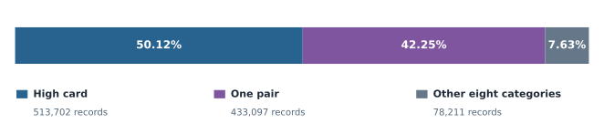

Poker Hand Classification · Part 3 of 7
Main Exploratory Finding
Two slides · Approximately 1 minute at a steady speaking pace.
Slide 1 · Category imbalance
Two categories account for almost every hand.
Descriptive counts across both supplied files · 1,025,010 records.
of records are high card or one pair.The other eight categories share just 7.63%.

- High card: 50.12% · 513,702 records
- One pair: 42.25% · 433,097 records
- Other eight: 7.63% · 78,211 records
Speaker notes · About 30 seconds
Our main exploratory finding is the imbalance between hand categories. Across the combined supplied files, high-card hands and one-pair hands account for about ninety-two percent of records. All eight other categories share the remaining eight percent. The chart shows how often categories occur in this dataset. These frequencies describe the examples available to us; they are not model performance results.
Slide 2 · Why accuracy needs context
An easy accuracy score can hide difficult hands.
Always guessing high card would be correct about half the time.
8Royal-flush records in the combined supplied files
1Royal-flush hand in our validation split
Evaluation needs more than accuracy: Examine macro F1, per-category precision and recall, and the number of examples behind each score.
Speaker notes · About 30 seconds
That imbalance makes overall accuracy easy to misread. Always guessing high card would be correct about half the time in the combined files, even while missing every other category. There are only eight royal-flush records across those files. After preparation, only one royal flush appears in validation. Its result cannot establish reliability. We therefore need category-level scores alongside accuracy. Next, we will explain how we compare the models.